数学物理方法课程项目——圆形薄膜振动的理论分析与实验验证
| 课程 | 数学物理方法 |
| 研究课题 | 圆形张紧薄膜振动的Bessel模态理论分析与Chladni实验验证 |
| 核心方法 | 分离变量法 / Bessel函数 / COMSOL仿真 / MATLAB / 扫频盐粒法 |
| 关键结论 | 频率比定律验证误差<2%，成功显影3组模态节线 |
本项目以羊皮鼓膜为研究对象，围绕"圆形张紧薄膜在不同激励条件下呈现何种振动模态"这一核心问题，经历了从时域瞬态分析到频域稳态分析的研究路线迭代，最终通过扫频+Chladni盐粒法成功验证了Bessel模态理论。
1 问题引入：单次敲击的时域瞬态分析
研究最初的兴趣源于最直观的物理好奇：当一个圆形鼓膜受到一次短促敲击时，其膜面位移如何随时间演化？
将实际羊皮鼓抽象为理想二维圆形张紧薄膜，设膜面密度ρs（kg/m2），张力T（N/m），膜上横波传播速度c = √T/ρs。膜面任意点(r,θ)的位移u(r,θ,t)满足二维波动方程：
\[ (∂2 u)/(∂ t2) = c2 ∇2 u \]
边界条件为固定边界（Dirichlet条件）：u(a, θ, t) = 0。
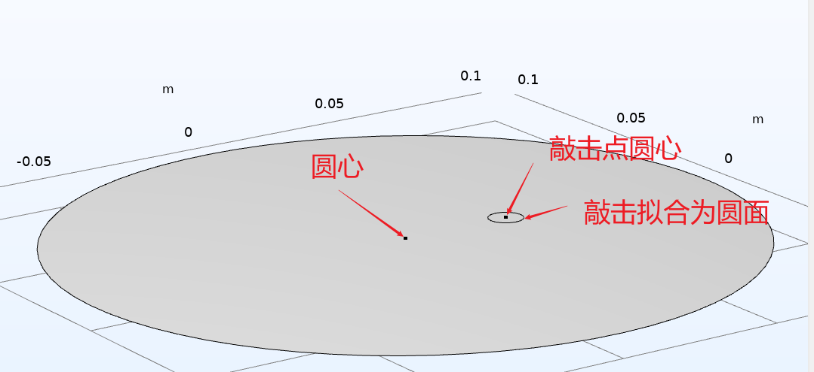
1.1 分离变量法求解本征模态
采用分离变量法u = R(r)Theta(θ)T(t)，径向部分满足m阶Bessel方程，由于膜心r=0处位移有限，舍弃第二类Bessel函数Ym，仅保留第一类Bessel函数Jm：
\[ Rmn(r) = Jm(αmn)/(a) r \]
其中αmn为Jm的第n个正零点。空间本征模态为：
\[
Phimn(r,θ) = Jm(αmn)/(a) r
cos(mθ)
sin(mθ)
\]
对应本征频率为：
\[ fmn = (1)/(2π) √(T)/(ρs) · (αmn)/(a) \]
1.2 COMSOL仿真验证瞬态响应
通过COMSOL构建鼓膜有限元模型，模拟敲击极短时间的正半周期正弦激励，分析圆心位移随时间的变化：
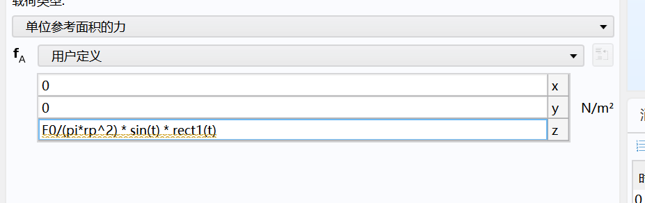
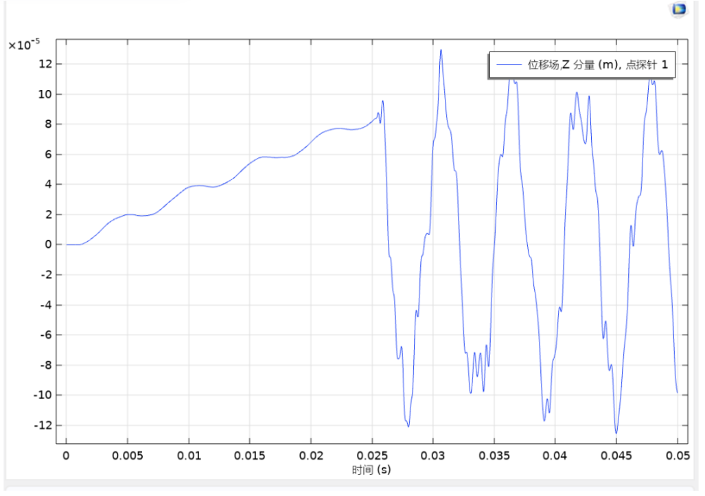
仿真结果与MATLAB理论解高度重合，证明了理论分析的准确性。但同时揭示了时域观测的三大困难：
- 多模态混叠：一次敲击同时激发大量模态，时域信号是多频叠加
- 瞬态衰减快：高阶模态在极短时间窗口内衰减殆尽
- 位移幅值小：毫米甚至亚毫米级位移，普通设备难以精确采集
2 研究路线关键迭代：从时域到频域
核心转折：上述三大困难表明——时域瞬态敲击几乎不可能"看清"单一模态。要验证Bessel模态形状，必须通过稳态共振把单一模态"筛选"出来，即从"时域瞬态"迭代为"频域稳态扫频响应"。这一转折是整个研究的方法论核心。
2.1 频域稳态理论：Helmholtz方程与共振筛选
取正弦稳态激励，波动方程转化为非齐次Helmholtz方程。利用本征函数展开，每阶模态的频率响应为：
\[ cmn(ω) = (Fmn)/((ωmn2 - ω2) + 2jzetamnωmnω) \]
当驱动频率ω → ωmn时，分母趋近最小，该模态被显著放大，其他模态贡献弱——这就是共振筛选机理，也是Chladni盐粒法可行的根本物理原因。
3 核心验证判据：频率比定律
对同一张鼓膜，材料参数T、ρs和半径a均为常数。任意两模态频率之比仅由Bessel零点比决定：
\[ (fmn)/(fpq) = (αmn)/(αpq) \]
这一定律的重要意义在于：无需精确测量难以获取的膜张力或面密度，只需测量两个共振频率即可与纯数学的Bessel零点比对照。
锚点预测法：选取(0,2)模态作为锚点（实测f0,2 = 525 Hz），利用频率比定律预测其他模态频率：
| 模态(m,n) | Bessel零点αmn | 节线结构 | 预测频率(Hz) |
|---|---|---|---|
| (0,1) | 2.4048 | 仅边界圆（基频） | 228.7 |
| (1,1) | 3.8317 | 1条直径 | 364.5 |
| (2,1) | 5.1356 | 2条直径（四瓣） | 488.5 |
| (0,2) | 5.5201 | 1个内圈+边界圈 | 525（锚点） |
4 MATLAB仿真：本征模态节线可视化
利用Bessel解析表达式，通过MATLAB生成各模态的理论节线图（Chladni标准答案）。节线由Phimn = 0确定，包括径向节线（m条直径）和角向节线（n-1个同心圆）：
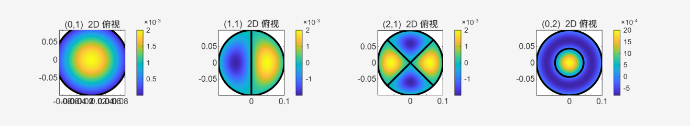
(0,1)全膜同相、(1,1)两半反相、(2,1)四瓣、(0,2)同心双圈" onclick="openLightbox(this)">5 实验设计：扫频+Chladni盐粒法
5.1 实验装置
| 组件 | 说明 |
|---|---|
| 鼓膜 | 羊皮鼓，半径a ≈ 0.1 m，边缘固定于木框 |
| 激励源 | 手机/电脑音频软件生成单频正弦波，音箱播放 |
| 音箱 | 置于鼓膜正下方约5–10 cm，声压近似轴对称 |
| 显影介质 | 食盐颗粒，均匀薄撒 |
| 记录设备 | 手机相机俯拍 |
5.2 盐粒显影机理
盐粒在振动膜面上的运动遵循：大振幅区域盐粒受周期性惯性力被"抖"离，而节线（Phi = 0）附近振幅最小，盐粒稳定停留并累积。因此稳态后盐粒聚集位置≈理论节线位置。
6 实验结果与理论对照
6.1 锚点模态(0,2) @ 525 Hz——同心双圈
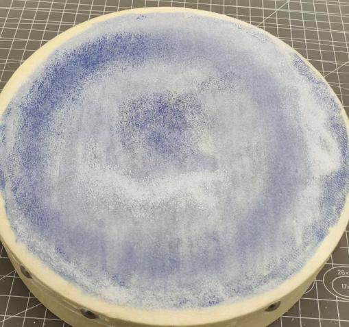
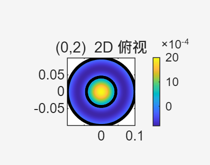
6.2 模态(1,1) @ 365–370 Hz——直径节线
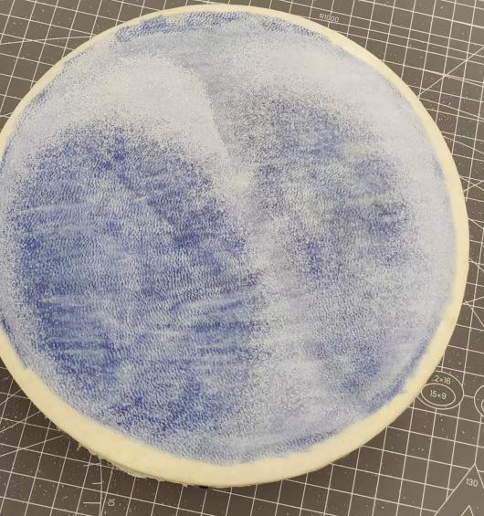
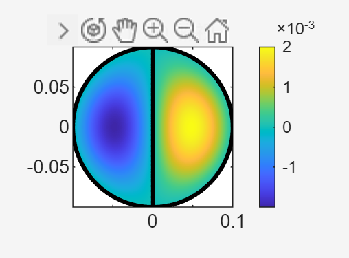
6.3 模态(0,1)基频——空心圆环

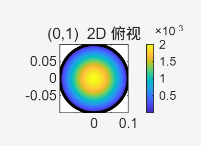
6.4 模态(2,1)的观测困难与原因分析
(2,1)模态（理论488 Hz）未能稳定显影，实验中445–495 Hz区间图样复杂且不稳定：
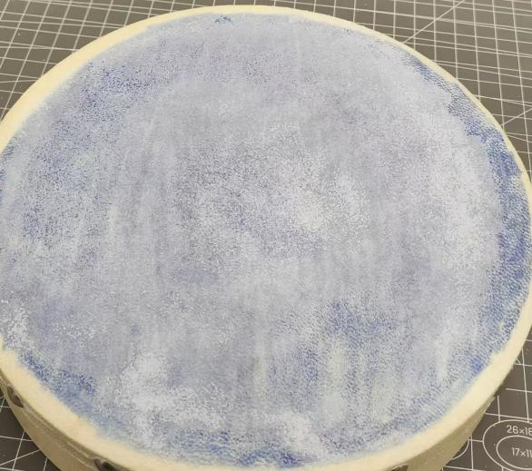
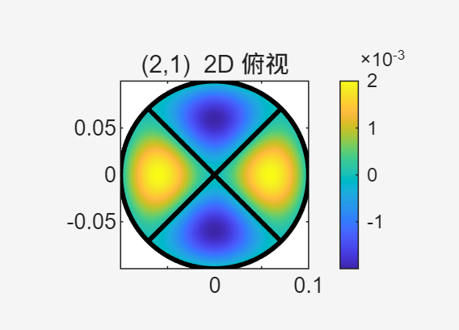
未能显影的原因分析：(1) 488 Hz与525 Hz间隔仅7%，易产生模态竞争；(2) 轴对称声压激励对m=2模态耦合效率低。
7 定量验证汇总
| 模态对 | 理论比值 | 实验比值 | 相对误差 | 吻合度 |
|---|---|---|---|---|
| f0,1/f0,2 | 0.436 | ~0.448 | 2.5% | starstarstarstar |
| f1,1/f0,2 | 0.694 | ~0.705 | 1.6% | starstarstarstar |
| f0,2/f0,2 | 1.000 | 1.000 | 0%（锚点） | starstarstarstarstar |
| f2,1/f0,2 | 0.930 | 未稳定 | — | starstar |
8 实验不足与反思
- 激励源频响受限：音箱在高频段声压输出下降，高阶模态激励能量不足
- 真实阻尼：空气辐射、膜材料内阻尼、边界摩擦导致高阶模态共振峰被"压低"
- 显影介质局限：盐粒粒径不均匀、摩擦力影响迁移效率
- 环境扰动：温湿度变化导致膜张力漂移，影响实验重复性
- 模态形状由Bessel函数Jm与三角函数乘积决定，m为角向节线数，n为径向节线数
- 频率比定律fmn/fpq = αmn/αpq成功验证，误差<2.5%
- 时域瞬态→频域稳态的方法迭代，是过渡至可观测实验的关键转折
- 轴对称激励仅能有效耦合m=0模态；非轴对称模态需改进激励方式